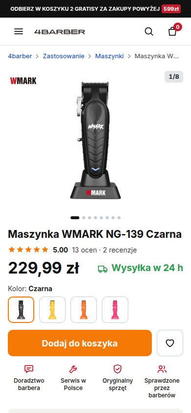

4barber — rozwój sklepu
Makiety nowej wersji 4barber.pl budowane od obecnego sklepu. Dane produktu (ceny, parametry, opinie) z żywego sklepu, z datą odczytu. Repo publiczne, publikacja przez GitHub Pages.
Przegląd „jak jest” — 27.09.2026

Przegląd obecnego sklepu ze zrzutami i diagnozą →
Strona główna, kategoria, karta bestsellera NG-139, po dodaniu do koszyka, koszyk. Co zostaje, co blokuje sprzedaż. Główny wniosek: na karcie produktu cena i „Dodaj do koszyka” są dwa ekrany pod pierwszym widokiem telefonu, bez wersji przyklejonej.
Karta produktu: Maszynka WMARK NG-139 Czarna — propozycje
Dwie białe (v1, v4) i jedna czarna (v3). Decyzja Szymona 27.09: czarna zostaje jedna. v2 „Stanowisko” wycofana z galerii, plik zostaje jako historia. PDF z całością: raport-2026-09-27.pdf.

v1ostrożna ewolucja
„Porządek” — ten sam sklep, nowa kolejność
Wygląd obecnego 4barber.pl 1:1 (Inter, biel, pomarańczowy przycisk), ale cena, dostępność i „Dodaj do koszyka” w pierwszym ekranie telefonu, sticky CTA, swatche kolorów zamiast kafli, opinie barberów na karcie.

v4biała + technikalia
„Porządek” z technikaliami w prawej szpalcie
Jak v1, ale lista parametrów z ptaszkami wraca do prawej szpalty pod oceną, jak na obecnym sklepie. Na telefonie lista schodzi pod ikony zaufania, żeby cena i „Dodaj do koszyka” zostały w pierwszym ekranie.

v3czarna · rekomendacja
„Karta techniczna” — maszyna w liczbach
Czarny arkusz specyfikacji: NG-139 w skali arkusza, cztery zmierzone liczby, linijka nasadek 3–25 mm do dotknięcia, skala obrotów, lista części. Przycisk kupna przyklejony od pierwszej sekundy.